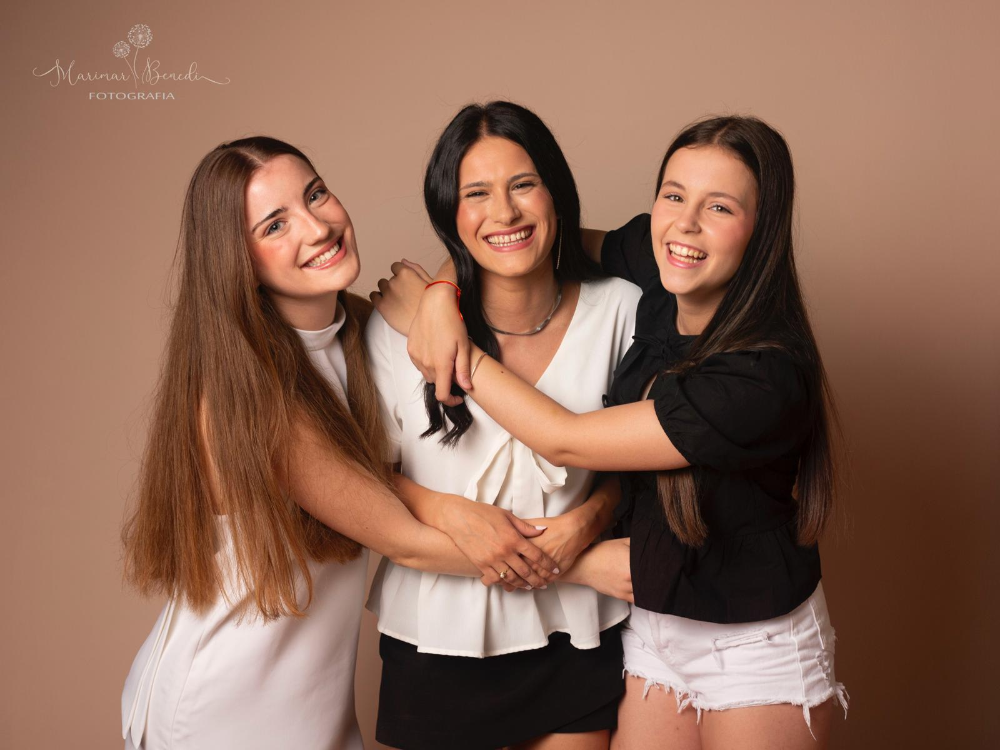
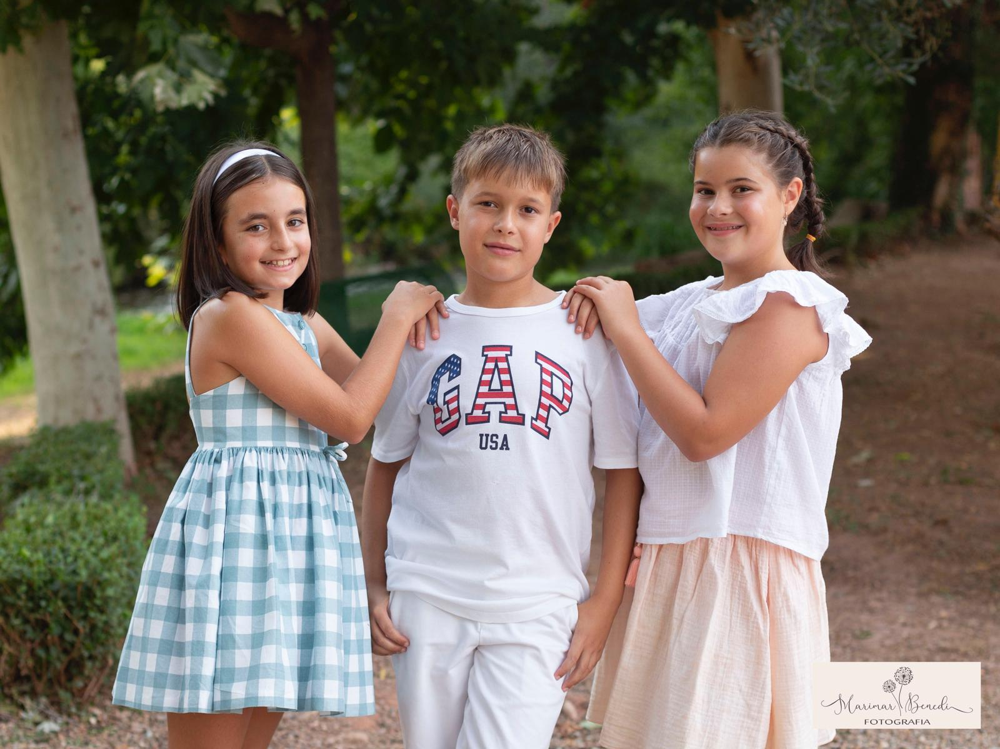
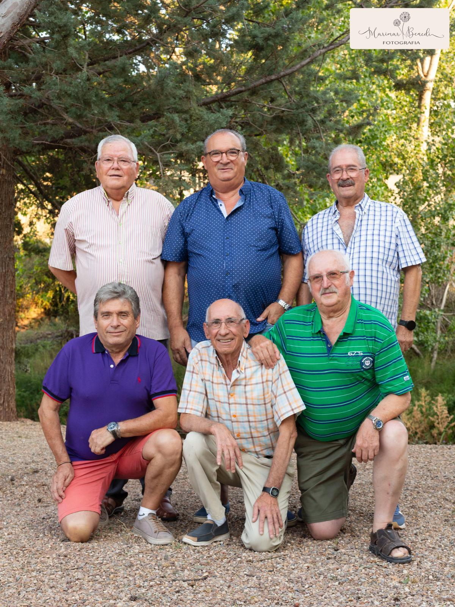
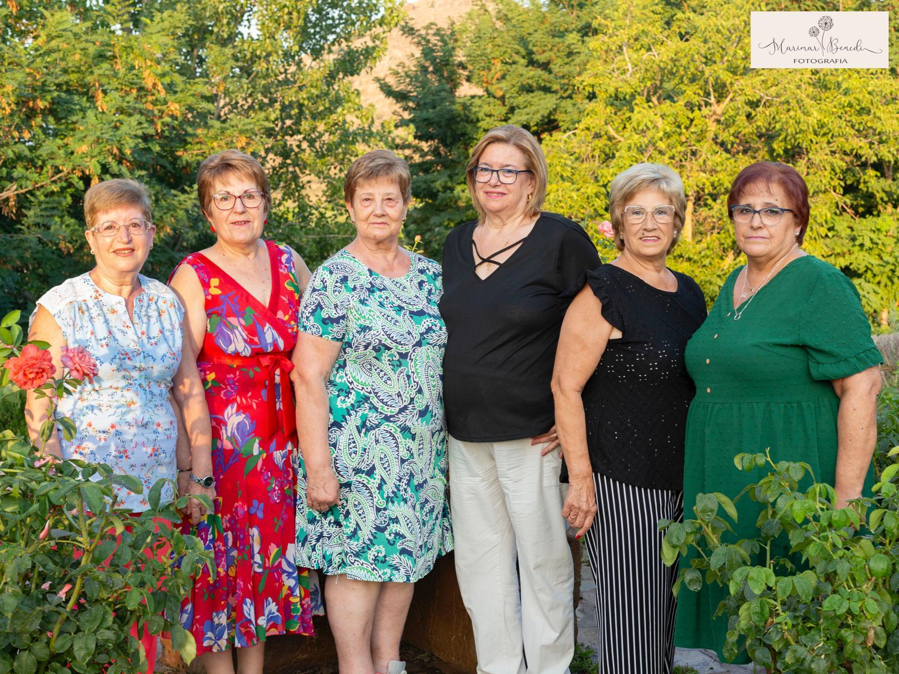
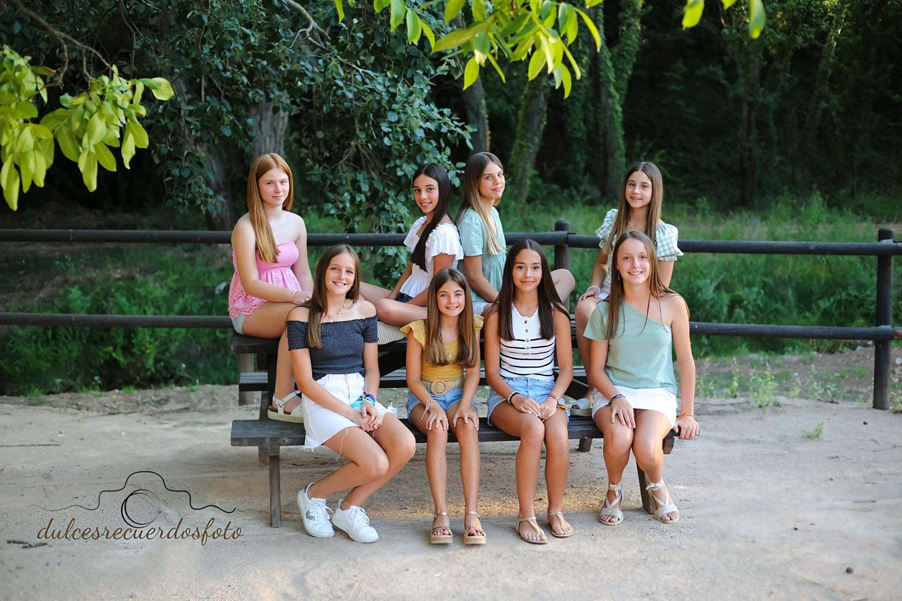
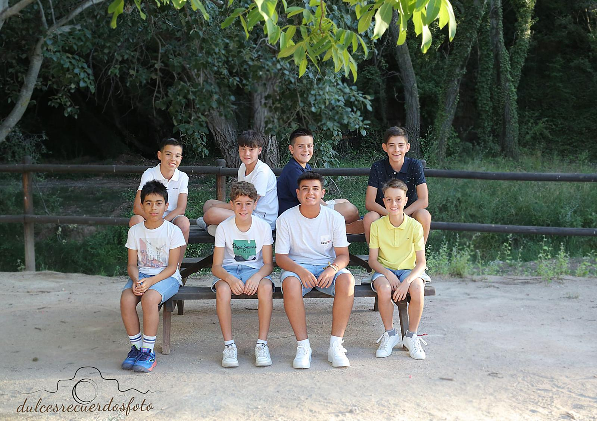

MAJAS SALIENTES 2023
Mariola Longares benedí
Patricia Strachinuta
Hola Breanos y Breanas,
Ya está aquí, un año más, nuestra semana grande, nuestras fiestas en honor a la Virgen del Rosario
Seguro que estáis tan nerviosos como nosotros: desempolvando la ropa de la peña, pensando en el día del chupinazo o preparando las compras de la peña
De nuevo viviremos 9 días de fiesta, cerveza, amigos, peñas, vacas, ferias y mil cosas más que solo un Breano sabe vivir. Viviremos estas fiestas de las que todos estamos tan orgullosos, pues no hay otras como las nuestras.
Como sabéis, somos un grupo de jóvenes que esta año nos hemos unido para preparar y organizar las fiestas, siempre con la mejor intención y con la idea de hacer disfrutar tanto a mayores como pequeños.
Nos dirigimos a vosotros, en primer lugar, para desearos que paséis unos felices días rodeados de toda vuestra gente. Que durante los próximos 9 días os olvidéis de todos aquellos problemas que podáis tener y que solo tengáos un objetivo en vuestra cabeza: disfrutar.
Esperamos que la ilusión con la que hemos programado todo os llegue y que os quedéis con buenas sensaciones finalizados estos días.
Disfrutad Breanos, porque ningún Rosario es igual al anterior, pero todos son igual de especiales
Ganadería: Hnos Ferrer
8:00hEncierro y vacas por la calle
9:00hBecerras en la plaza
Ganadería: Hermanos Marcén
17:00hVacas en la plaza
Ganadería: Adrian Dominguez
17:00hVacas en la plaza + GRAND PRIX
Ganadería: Hnos Oliva Escudero
17:00hVacas en la plaza
Ganadería: Raul Izquierdo
17:00hVacas en la plaza
00:00hToro de ronda
Ganadería: El Ruiseñor
8:00hEncierro y vacas por la calle
9:00hBecerras en la plaza
Ganadería: Rafael Alarcon
17:00hVacas en la plaza + Exhibición tauromaquias
Ganadería: Oro Vela
00:00hToro de ronda
Ganadería: Hermanos Marcén
17:00hVacas en la plaza
Orquesta NUEVA ERA + Discomovil DJ SUAL
Orquesta NEVERLAND + Discomovil DJ JUAN MORTE
Orquesta NUEVA ALASKA + Discomovil DJ JORGE TELLO
ECOS ( en el corro )
Grupo "TODO CAFEÍNA"
Orquesta MAGIA NEGRA + Discomovil DJ DAVID ÁLVAREZ
MACROFIESTA CON DJ`S
DJ EDU MARIN, DJ ÁLEX PARDOS Y DJ SONN
Mariola Longares benedí
Patricia Strachinuta
Pilar Gaspar Pinilla
Ainhoa Navarro Berdejo
Marta Serrano Pérez
Zeus Embid Hernández
Laura Benedí Navarro
Indira Embid Hernández
Nos acompañaran durante esta noche tan especial la orquesta Neverland y para acabar la noche contaremos con Dj. Juan Morte
12:00h¡Vamos Brean@s! Todos a correr los primeros cabezudos de nuestras fiestas acompañados de la CHARANGA ABLITAS.
15:30 ¡Ahora sí que sí! Peñistas, todos a la plaza con nuestras ropas de peña para dar comienzo al CHUPINAZO. Este año el pregón correrá a cargo de la PEÑA LOS STRAGOS. Como novedad, os invitamos a elaborar una PANCARTA en representación de cada peña. Con ellas recorreremos las calles del pueblo en busca de nuestras majas de fiestas con la charanga y nuestro mítico camión de cerveza.
18.30h Honraremos a nuestra patrona la Virgen del Rosario con nuestra tradicional ofrenda de flores.
20.00h Solemnes COMPLETAS en honor a la Virgen del Rosario.
23.30h Inauguraremos las verbenas de nuestras fiestas encendiendo la hoguera en la plaza bailando al son de la charanga.
01.15h¡Que el ritmo no pare! Seguiremos bailando en el pabellón con la ORQUESTA NEVERLAND y para los más valientes finalizaremos la noche con DISCOMÓVIL. El encargado de agotar nuestras pilas será DJ JUAN MORTE.
08.10hROSARIO de la Aurora
08.30hMisa Primera
11.30hMISA MAYOR en honor a nuestra patrona la Virgen del Rosario
13.30hVERMÚ – CONCIERTO en el pabellón a cargo de la Orquesta NUEVA ALASKA , para todas las personas colaboradoras
16.30h ¡Que ruede el balón! Todos con la camiseta del CD BREA a animar a nuestro equipo al PIEDRABUENA.
CD. BREA - ANDORRA C.F
"AUPA EL BREA"
19.30hROSARIO General por las calles de la villa acompañados por la Banda Municipal.
23.30hVerbena en la Plaza España. ¿Por dónde saldrán las chispas hoy?
01.15h¡Que no decaiga la fiesta! Todos al pabellón a bailar con una de nuestras orquestas favoritas, NUEVA ALASKA
Seguidamente DISCOMOVIL con DJ. JORGE TELLO.
07.15hDaremos la primera vuelta al pueblo de madrugada acompañados por la CHARANGA ABLITAS.
08.00hPrimer encierro de las fiestas a cargo de la ganadería GANADERÍA HNOS FERRER (ALFAJARÍN). A continuación, becerras en la plaza.
11.00hMisa de Difuntos.
16.30hAcompañados de la charanga iremos en busca de nuestras majas de fiestas
17.00h Primera Suelta de vacas en la Plaza España a cargo de la ganadería HNOS. MARCÉN ( Villanueva de Gállego ).
19.00hGran rifa Benéfica
23.30hVerbena en el Corro. ¿Qué sorpresa tendremos hoy?
01.00hRecorrido de peñas acompañados de la Charanga
11.00h Santa Misa
12.00h ¡VAMOS MACHOTES! Todos juntos iremos a buscar a nuestros majos del día del hombre a la PEÑA LOS BRINCOS, donde nos invitarán a un aperitivo. Seguidamente VERMÚ TORERO por los bares del pueblo
17.00h¡ATENCIÓN PEÑISTAS! Para los más valientes… ¿quién se anima a participar en el GRAN PRIX? Seguidamente suelta de vacas a cargo de la ganadería ADRIÁN DOMINGUEZ (FUNES).
19.00hRifa Benéfica.
23.30h. Sabemos que llevabais muchos años esperando repetir este momento… ¡cuidado con las coces! SUELTA DE BURROS EN LA PLAZA ESPAÑA. ¿Quién se atreverá a darse un paseíto sobre ellos?
01.00hRuta de bares acompañados de la charanga
12.00h Misa mayor en honor a todas las mujeres Breanas. Este año la representación de la mujer Breana correrá a cargo de la PEÑA LOS BRINCOS. Nos invitarán a un aperitivo en su peña.
14.00hComida de la mujer Breana en el pabellón. ¿Habrá sorpresas?
16.30h. ¡Que no se diga! Subiremos todas juntas a la Plaza acompañadas de la charanga.
17.00hSesión de Vacas a cargo de la ganadería HNOS. OLIVA ESCUDERO ( Quinto de Ebro ) Haremos un descanso para repartir el tradicional bocadillo de sardina
19.00hRifa Benéfica.
23.30hVerbena en el corro. Un año más realizaremos el mítico BAILE DEL FAROLILLO
01.15h. Nos quedaremos todos en el corro para disfrutar de la actuación del grupo “ECOS”. Nos harán disfrutar de grandes éxitos de las últimas décadas..
11.00h Santa Misa
11.30hCabezudos para los más pequeños acompañados de la charanga
12.30h ¡ÁNIMO PEÑISTAS! Todos a la plaza a comenzar los preparativos para cocinar nuestros ricos RANCHOS. ¿Cuál se llevará el premio?
18.00h ¿Cuál será la primera peña en conquistar al público? Queremos ver vuestro talento encima del escenario como si estuviésemos en el mismísimo programa de TU CARA ME SUENA. ¡Seguro que nos sorprendéis!
21.00h¡MUUUUUUU! Comenzaremos a repartir la vaca en la puerta de la Iglesia para cenar todos juntos en la Plaza.
00.30h Recorrido por las calles del pueblo acompañados del CAMIÓN MUSICAL a cargo de DJ MARCOS LETHAL. ¡Calentemos motores!
02.00h. Finalizaremos el recorrido en el pabellón y disfrutaremos del GRUPO “TODO CAFEÍNA”. Este grupo nos hará disfrutar de un TRIBUTO a 3 grandes grupos de varias generaciones conocidos por todos: LA OREJA DE VAN GOGH, QUEEN Y MECANO.
11.00h Santa Misa
11.30h¡A por todas pequeños, que es vuestro día! Recorrido con la charanga acompañados por los cabezudos.
12.30hHinchables para los más pequeños en el pabellón a cargo de PARQUE INFANTIL PITUFILANDIA.
14.00hComeremos todos juntos en el pabellón nuestros ricos bocatas
14.30h Para rebajar la comida realizaremos unos JUEGOS TRADICIONALES Y DE PUNTERÍA en el pabellón a cargo de JALÓN GESTIÓN DEPORTIVA. ¡Lo pasaremos fenomenal!
16.00h Iremos todos juntos a buscar a nuestros MAJICOS Y MAJICAS a la PEÑA AMANKAY y PEÑA KGB.
17.00hSuelta de Vacas en la plaza a cargo de la ganadería RAÚL IZQUIERDO (Codo).
19.00hRifa Benéfica.
Al finalizar, la peña DESFASE nos invita a una rica merienda para celebrar su XV Aniversario.
20.30h Sesión de tarde infantil a cargo de la ORQUESTA MAGIA NEGRA en el pabellón.
00.00h Primer TORO DE RONDA en la Plaza España a cargo de la cuadrilla de EMBOLADORES DE SANTA PANTARIA. Y seguidamente suelta de vacas de la GANADERÍA ORO VELA (TABUENCA).
01.15h ¡Que no se diga! Todos al pabellón a disfrutar de nuestra penúltima noche. Bailaremos y cantaremos a cargo de la ORQUESTA MAGIA NEGRA. Seguidamente DISCOMÓVIL con DJ DAVID ÁLVAREZ.
 07.15h. Daremos la última vuelta al pueblo de madrugada acompañados de la charanga.
08.00h ÚLTIMO ENCIERRO a cargo de la GANADERÍA EL RUISEÑOR (FRESCANO). Seguidamente suelta de becerras en la plaza.
12.30hSanta Misa y procesión en honor a la Virgen del Pilar.
16.30hTodos juntos iremos a buscar a las Majas de Fiestas.
17.00h Penúltima SUELTA DE VAQUILLAS a cargo de la GANADERÍA RAFAEL ALARCÓN (PASTRIZ).
19.00hRifa benéfica.
19.00h¡Para los pequeños y no tan pequeños! SUELTA DE CARRETONES en la Plaza.
00.00h Segundo TORO DE RONDA a cargo de la cuadrilla de EMBOLADORES DE SANTA PANTARIA. Seguidamente suelta de vaquillas en la Plaza a cargo de la GANADERÍA ORO VELA (TABUENCA).
01.15hMACROFIESTA MUSICAL con DJ EDU MARIN, DJ ÁLEX PARDOS Y DJ SONN. ¿Seréis capaces de aguantar hasta este momento? ¡Os esperamos, valientes!
08.30hRosario de la Aurora.
12.30hMisa Mayor.
16.30hIremos a buscar a las Majas de Fiestas por última vez este año, acompañados de la Charanga STRAGO (Utebo).
17.00hÚltima sesión de vacas de la feria a cargo de la ganadería HNOS. MARCEN (Villanueva de Gállego).
19.00hRifa Benéfica.
19.30hMerienda en el pabellón para los más mayores, donde las Majas de Fiestas les harán entrega de un obsequio.
22.00hFUEGOS ARTIFICIALES Y TRACA FÍN DE FIESTAS en el parque del zapatero a cargo de la Pirotécnia Manchega.